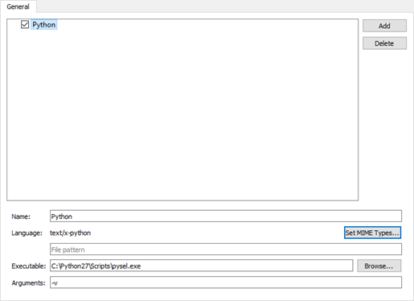

Using Language Servers
For several programming languages, a language server is available that provides information about the code to IDEs as long as they support communication via the language server protocol (LSP). This enables the IDE to provide the following services:
- Code completion
- Highlighting the symbol under cursor
- Moving to the symbol definition
- Inspecting code by viewing the document outline
- Finding references to symbols
- Code actions
- Integrating diagnostics from the language server
By providing a client for the language server protocol, Qt Creator can support the above features for several other programming languages besides C++. However, the experimental client does not support language servers that require special handling.
Qt Creator uses the MIME type of the file to determine which language server to request information from when you open a file for editing. Add new MIME types or file patterns to match language servers. If you do not set at least one MIME type or file pattern, no files will be sent to the language server. This is done to avoid unnecessary traffic and inaccurate information, as files are only sent to the languge server if they are known to be handled by it. For more information about how Qt Creator uses MIME types, see Editing MIME Types.
The experimental language service client has been mostly tested with Python. If problems arise when you try some other language, please select Help > Report Bug to report them in the Qt Bug Tracker. The reports should include Qt Creator console output with the environment variable QT_LOGGING_RULES=qtc.languageclient.*=true set.
To use a language server:
- Enable the language server client by selecting Help > About Plugins > Other Languages > Language Client (or Qt Creator > About Plugins > Other Languages > Language Client on macOS).
- Restart Qt Creator to load the language client plugin.
- Select Tools > Options > Language Client (or Qt Creator > Preferences > Language Client > on macOS) to view a list of language servers.

- Select the check box next to the language server name to enable the language server.
- Select Add to add language servers.
- In the Name field, enter a name for the language server.
- In the Language field, select Set MIME Types to select the MIME types of the files to send to the language server. In the field below, you can enter file patterns to extend the MIME types, separated by semicolons.
- In the Executable field, enter the path to the language server executable.
- In the Arguments field, enter any required command line arguments.
To remove language servers from the list, select Delete.